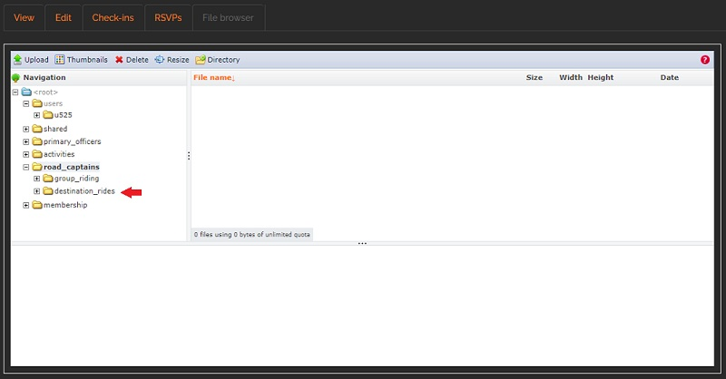
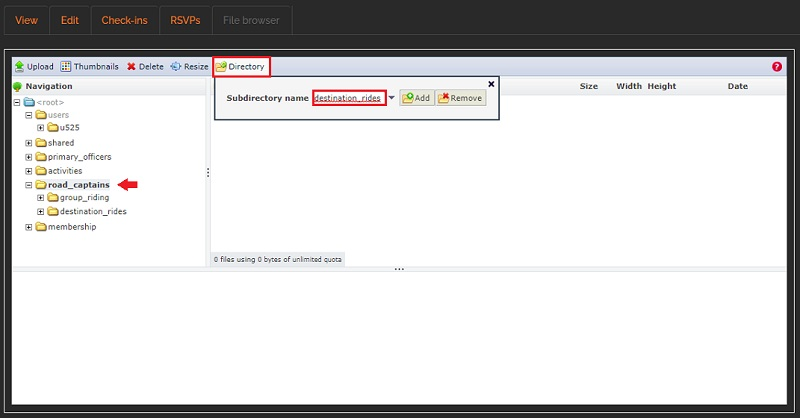
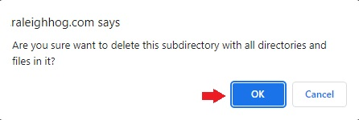
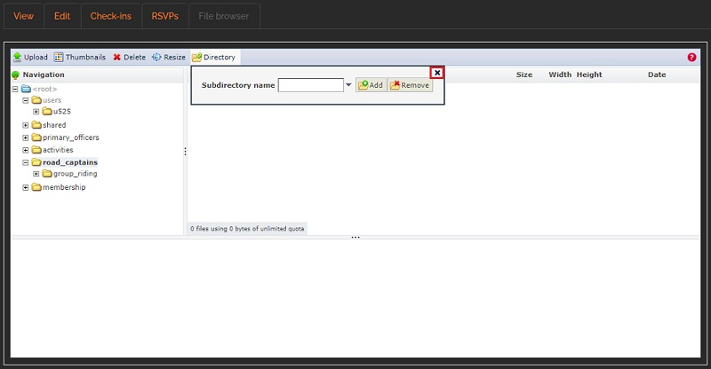

Delete a Subdirectory
Only follow these steps if you inadvertently created a subdirectory
Only delete a subdirectory if you created it and know it is not needed. Extra caution should be taken before deleting any subdirectory that contains pdf's, images, etc as deleting them may break existing links on your website.
- In this example, a subdirectory named destination_rides was inadvertently created in the road_captains directory and we want to delete it. 
- Ensure that we are in the correct directory for the subdirectory we want to delete
- Click on the road_captains directory to highlight it.
Then click Directory in the tool bar. The pop-up appears.
Enter the name of the subdirectory to be deleted in the Subdirectory name box, then click the Remove button 
- You will get a confirmation pop-up asking if you're sure you want to delete the subdirectory. Click the OK button to comfirm.
Note: You will always get a pop-up when trying to delete a subdirectory (or any files within a directory/subdirectory) so that you do not inadvertently delete something. see image below 
- There will be a brief confirmation pop-up saying the subdirectory was deleted and, as shown in the following screenshot, the subdirectory has been deleted from the road_captains directory. 
- That's it! You have successfully deleted an inadvertently created subdirectory.